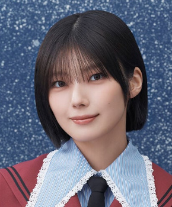

藤吉夏鈴ふじよしかりん

愛MUST BE（2026年）・最新
櫻坂46 2期生 ・ 現役
所属歴：欅坂46
センター曲：13曲（シングル表題曲センター：2曲） フォーメーション/歌唱参加：72曲
ライブ記録：センター 19公演・出演記録のある公演 136公演
ブログ記事：173件
学年：2001年度（同級生 全17人を見る）
フォーメーション統計：登場 65曲・フロント（1列目）26曲
よく隣になるメンバー：小林由依（14回）、小池美波（12回）、森田ひかる（11回）
センター曲
なぜ 恋をして来なかったんだろう？、Plastic regret、偶然の答え、Microscope、One-way stairs、Start over!、一瞬の馬、恋は向いてない、Addiction、The growing up train、キスが苦い、Sunny side up、僕は向いてない
推しに登録すると、トップページに「推しの新着」（最新のブログ）が出ます。
歴代アー写など（22枚）
タップすると上の写真が切り替わります。上の写真をタップすると最新のアー写に戻ります。